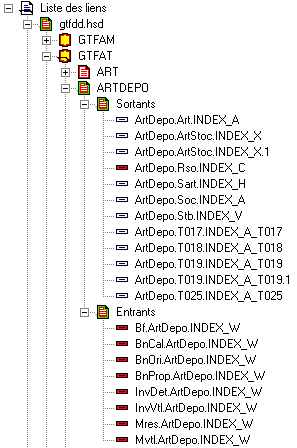
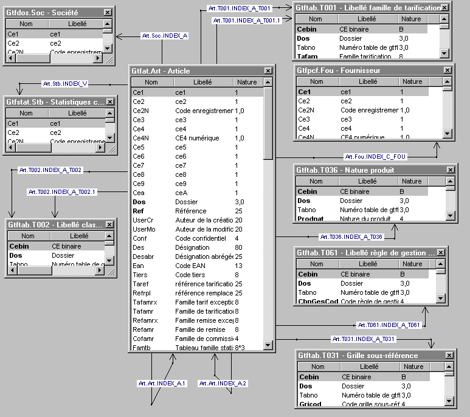

L’écran de l’éditeur de liens se divise en deux parties :
La partie de gauche contient un arbre contenant la liste des liens et la liste des schémas.
La partie de droite contient le schéma en cours.
Arbre
L’arbre est hiérarchisé de la façon suivante :
Liste des liens
Dictionnaire
Fichier
Table
Sortants
Liens sortants
Entrants
Liens entrants
Exemple

Remarque
Lorsque l’arbre contient des liens invalides, c’est à dire, des liens non encore validés, ces derniers sont encadrés de rouge ainsi que tous les ascendants.
Schéma
Le schéma est une représentation graphique d’une partie des liens. Attention, notez que c’est vous qui choisissez les éléments qui doivent apparaître dans le schéma. Les différents menus contextuels et les boîtes de dialogue proposent toujours un choix permettant d’afficher ou de cacher un élément (table ou lien) dans le schéma courant.
Il est possible et recommandé de faire plusieurs schémas. Un schéma représentant l’ensemble des liens de Divalto serait absolument illisible, à cause du nombre trop important de tables et de liens. Un schéma va donc permettre d’isoler quelques tables et de mettre en valeur les relations entre ces tables.
Xwin vous propose de créer automatiquement des schémas dans le menu principal Schémas ou dans les menus contextuels.
Exemple
